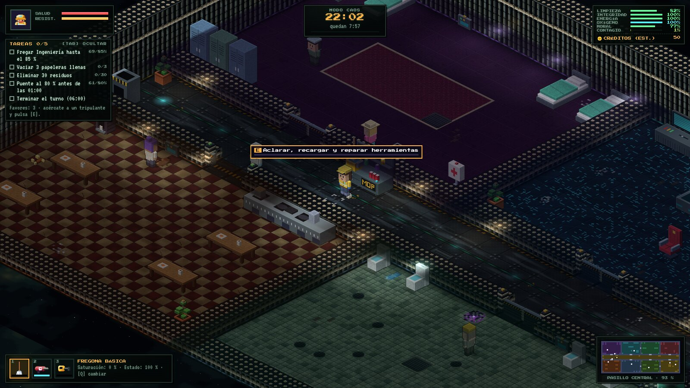
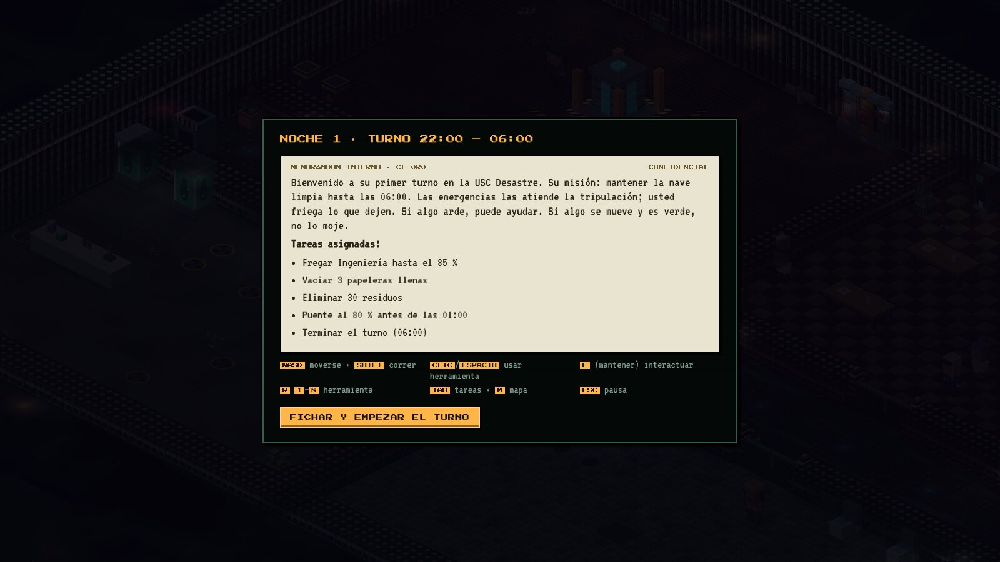
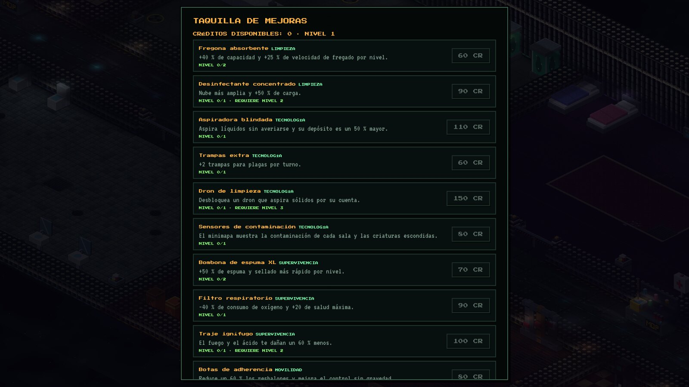
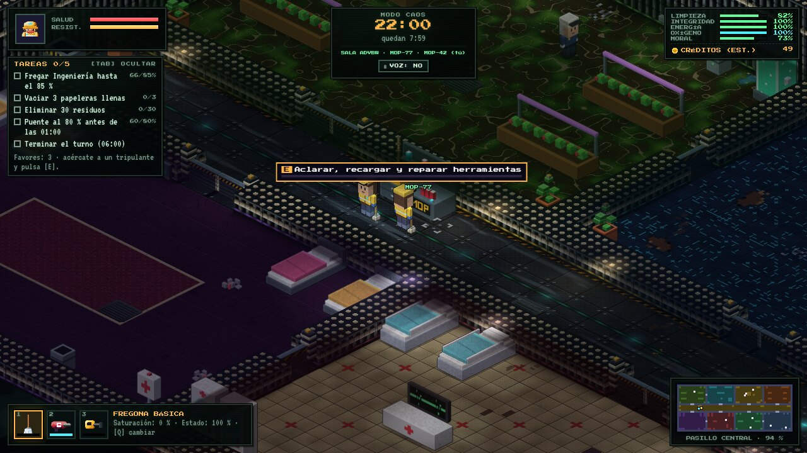

«Puedes salvar la galaxia, pero si no has fregado el comedor, no cobrarás las horas extra.»

Un memorándum asigna las tareas del turno: fregar salas, vaciar papeleras…
Suciedad, basura, charcos y manchas con 8 herramientas distintas.
Incendios, fugas, plagas, apagones y jefes. La tripulación necesita ayuda.
Informe final: créditos y experiencia para mejorar al conserje.
Turno de prueba + 9 noches con misión. Jefes: el Glorp del Baño 7, la Reina del Moho y el Rey Aspirador.
Aguantar todo lo posible y batir el récord.
Limpieza tranquila sin emergencias graves… o todo a la vez.
Reglas especiales: sin agua, a oscuras, turno exprés, solo fregona…
Semilla de nave opcional: la misma semilla genera la misma nave.


Simula la nave entera: tripulación, criaturas, fuego y suciedad.
Node.js reenvía mensajes por sala. WebSocket propio (RFC 6455) o sondeo HTTP si no hay WebSocket.
Mueven a su conserje y envían sus acciones al anfitrión.
Audio directo entre navegadores con WebRTC. El servidor solo reenvía la señalización (STUN, y TURN opcional).
¿Fichamos? La nave no se va a fregar sola.
khaki-elk-914724.hostingersite.com
github.com/nastxp/mop-13-turno-de-noche
khaki-elk-914724.hostingersite.com/slides/